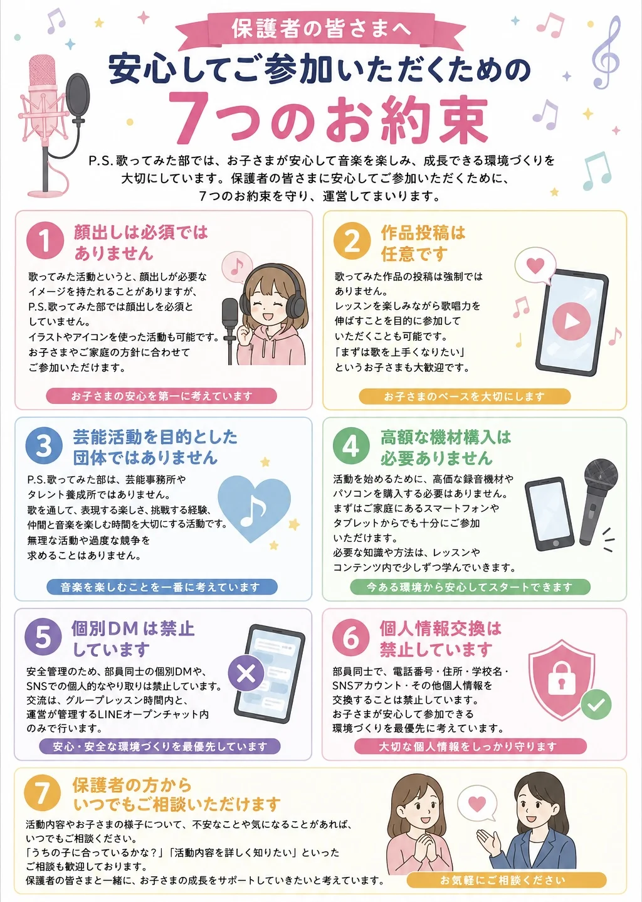

① お互いを大切にしましょう
歌の経験や得意なことは人それぞれです。
- 悪口や陰口
- 相手を傷つける言葉
- からかい行為
- 仲間外れ
みんなが気持ちよく参加できる環境を大切にしています。
P.S.歌ってみた部では、お子さまが安心して音楽を学べる環境づくりを大切にしています。
保護者の皆さまにも安心してご参加いただけるよう、以下のお約束を設けています。
歌の経験や得意なことは人それぞれです。
みんなが気持ちよく参加できる環境を大切にしています。
安全のため、住所、学校名、電話番号、SNSアカウント、その他個人が特定できる情報は共有しないようにしてください。
活動に関することは、保護者の方と相談しながら進めていただきます。
無理な活動や投稿を求めることはありません。
入会には親子面談が必須です。親御さまの了承のもとで入会手続きを行います。
お子さまのペースを大切にしながら活動していきます。
P.S.歌ってみた部では、安全面を考慮し、部員同士での個人的な連絡先交換や、SNS・DM等でのやり取りは行いません。
交流は、グループレッスンの時間内、運営が管理するLINEオープンチャット内に限定しています。
LINEオープンチャットでは、運営からのお題や投げかけに対して感想や作品を投稿する形で交流を行います。
安心して参加できる環境づくりのため、ご協力をお願いいたします。
活動中に撮影した写真や動画は、本人・保護者の許可なく公開することはありません。
また、他の参加者が写っている写真や動画を無断でSNS等へ投稿することもご遠慮ください。
P.S.歌ってみた部は、プロを目指す人だけの場所ではありません。
歌が好き。歌ってみたい。もっと上手になりたい。
そんな気持ちを応援する場所です。他の人と比べるのではなく、自分のペースで楽しみながら成長していきましょう。
活動中に不安なことや困ったことがあれば、一人で抱え込まずにご相談ください。
保護者の方からのご相談も歓迎しております。
保護者見学も可能ですので、参加の様子が気になる場合はお気軽にご相談ください。
安心して活動できる環境づくりのため、運営がサポートいたします。
P.S.歌ってみた部は、発声や歌唱などのボイストレーニングをベースに、歌ってみた、録音体験、歌唱力向上、作品投稿、グループレッスンでの交流を楽しむ活動です。
芸能活動を目的とした団体ではありません。高額な機材購入も不要です。
投稿は任意で、投稿内容や活動について講師が確認・サポートします。
お子さま一人ひとりのペースを大切にしながら、安全面に配慮した運営を行っております。
ご不明な点やご不安なことがございましたら、お気軽にご相談ください。
P.S.歌ってみた部では、お子さまが安心して音楽を学べる環境づくりを大切にしています。
保護者の皆さまにも安心してご参加いただけるよう、以下のお約束を設けています。

LINEに戻って、不安な点を相談しながら参加方法を確認できます。
LINEで相談・予約する